*本节主要是一些轻松的写写画画
创建工程
首先打开vs，点击右侧创建新项目
在这里进行过滤，Visual Basic,Windows,桌面
然后往下翻，找到Windows窗体应用(.Net Framework)
特别强调，一定要选择带这个“(.Net Framework)”的
.Net Framework是1.0版本到4.8版本，没有.Net Framework的是5.0以上的版本，有各种奇怪的特性，不能生成单个exe，并且用户层面没有普及，不推荐新手使用！
然后点击下一步，这里可以设置项目名称，比如我们设置一个HelloWorld。
解决方案名称会跟随项目名称一起变化。
框架选择4.8版本，如果找不到4.8，则说明你上一步没有选择带“.NetFramework”的那个选项，请回退到上一步
其他的就默认即可，然后点击创建。
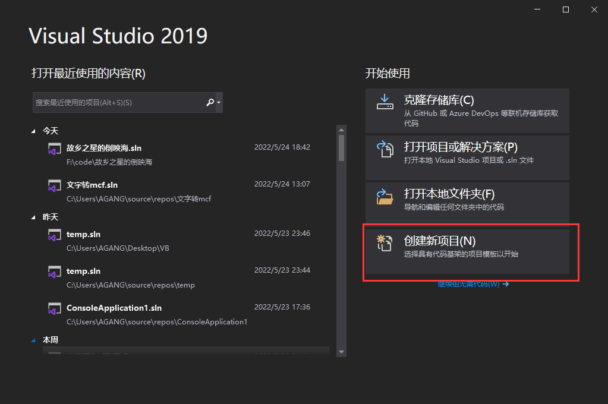
在这里进行过滤，Visual Basic,Windows,桌面
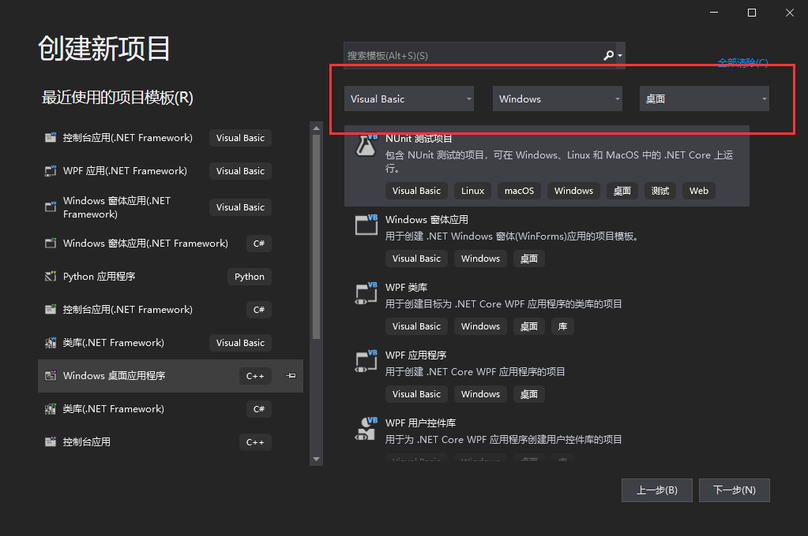
然后往下翻，找到Windows窗体应用(.Net Framework)
特别强调，一定要选择带这个“(.Net Framework)”的
.Net Framework是1.0版本到4.8版本，没有.Net Framework的是5.0以上的版本，有各种奇怪的特性，不能生成单个exe，并且用户层面没有普及，不推荐新手使用！
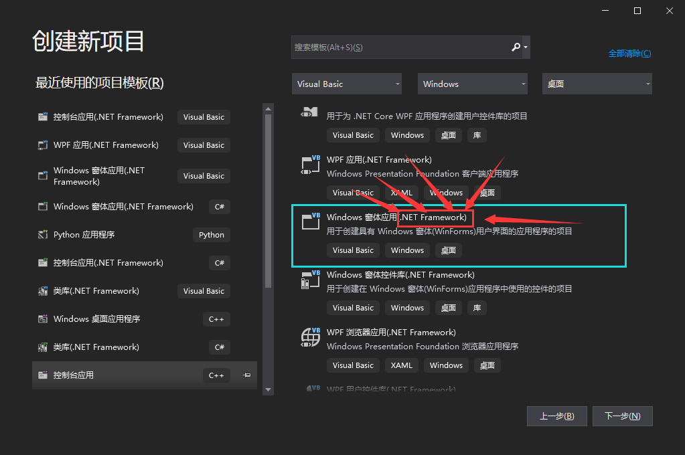
然后点击下一步，这里可以设置项目名称，比如我们设置一个HelloWorld。
解决方案名称会跟随项目名称一起变化。
框架选择4.8版本，如果找不到4.8，则说明你上一步没有选择带“.NetFramework”的那个选项，请回退到上一步
其他的就默认即可，然后点击创建。
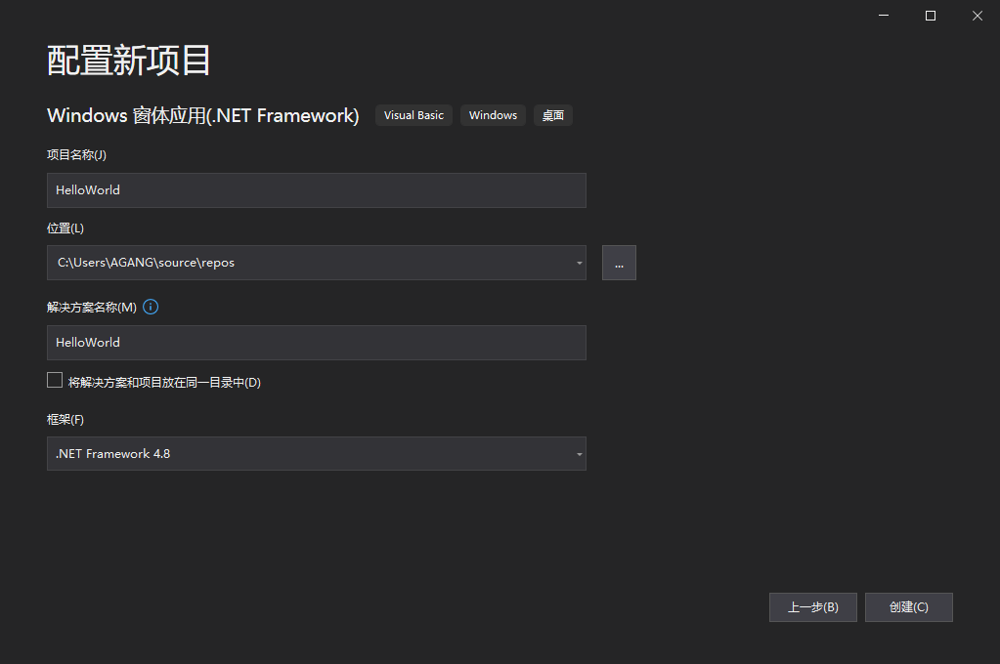
正式开始
是的，你没有看错，vs已经为你创建了一个窗口，相比其他语言方便很多。
接下来，点击左侧工具箱，并且把它固定住。
这个时候可以看到的是工具箱里面琳琅满目的“工具”，就是可以被放置到窗口上的内容，我们称它们为“控件”。
如果工具箱里面是空的，那就说明vs出现了bug，在设计区的窗口上双击一下，然后在上方标签页上切换回Form1.vb[设计]*即可。
接着我们找到按钮(button),点击一下
接下来，点击左侧工具箱，并且把它固定住。
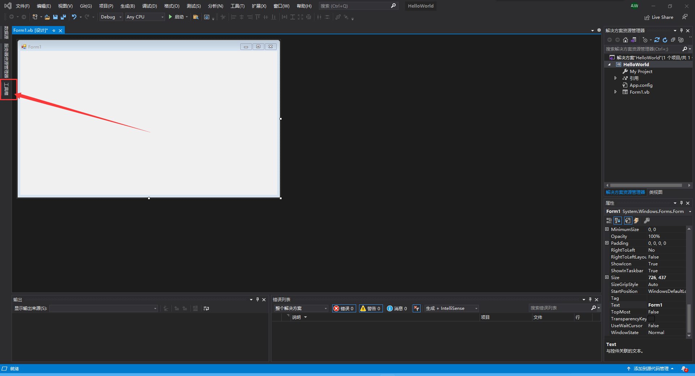
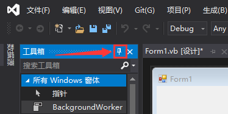
这个时候可以看到的是工具箱里面琳琅满目的“工具”，就是可以被放置到窗口上的内容，我们称它们为“控件”。
如果工具箱里面是空的，那就说明vs出现了bug，在设计区的窗口上双击一下，然后在上方标签页上切换回Form1.vb[设计]*即可。
接着我们找到按钮(button),点击一下
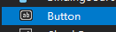
然后在窗口上拖动，放开，就能看到窗口上多出了一个按钮。
这个过程就跟使用画图软件画画一样，非常方便。
选中按钮后，右下角的属性面板显示的就是这个按钮的属性了。
找到里面的Text属性，修改它的值，就可以看到按钮上的文字也发生了变化。
同样道理，我们再找到Textbox(文本框)，并且在窗体上绘制一个
完成后可以尝试点击上方的启动，试试看。
这个时候可以看到，你的软件已经开始运行了，右上角的最小化、最大化、关闭也能正常使用，并且文本框里也可以自己输入文字了，只是按钮点了没反应，毕竟还没有为它写代码。
本节到此结束，下一节将接触一些简单的代码。
然后在窗口上拖动，放开，就能看到窗口上多出了一个按钮。
这个过程就跟使用画图软件画画一样，非常方便。
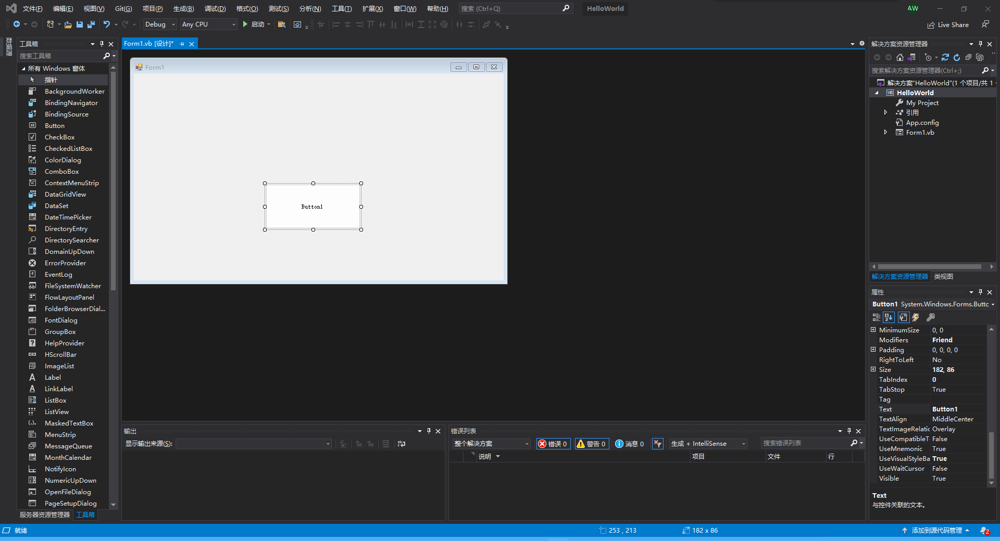
选中按钮后，右下角的属性面板显示的就是这个按钮的属性了。
找到里面的Text属性，修改它的值，就可以看到按钮上的文字也发生了变化。
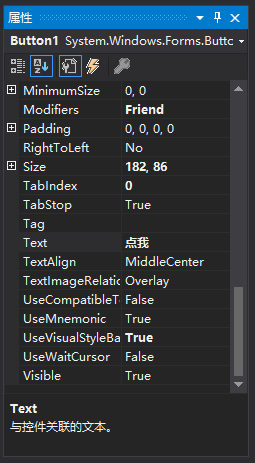
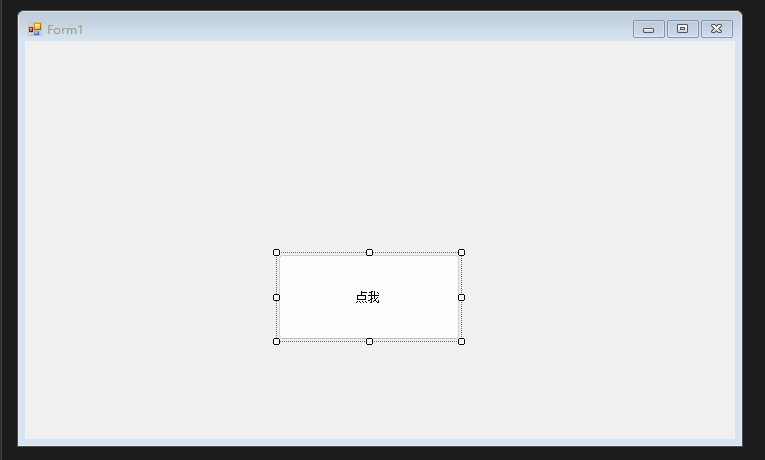
同样道理，我们再找到Textbox(文本框)，并且在窗体上绘制一个
完成后可以尝试点击上方的启动，试试看。
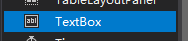
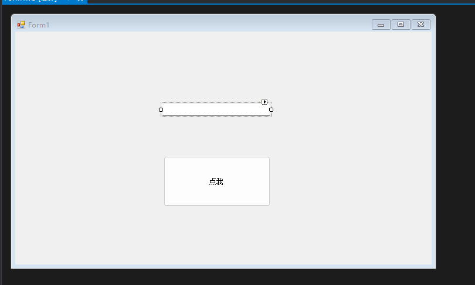
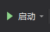
这个时候可以看到，你的软件已经开始运行了，右上角的最小化、最大化、关闭也能正常使用，并且文本框里也可以自己输入文字了，只是按钮点了没反应，毕竟还没有为它写代码。
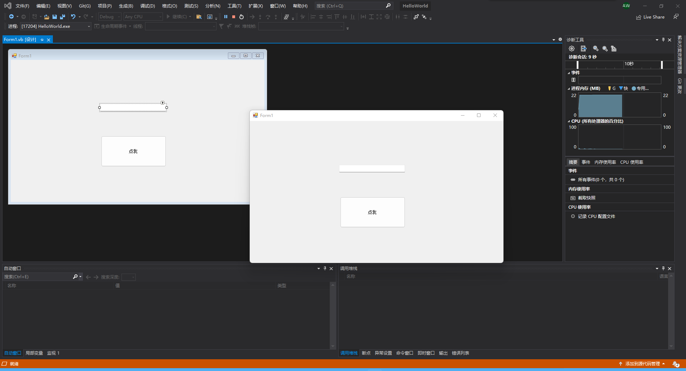
本节到此结束，下一节将接触一些简单的代码。